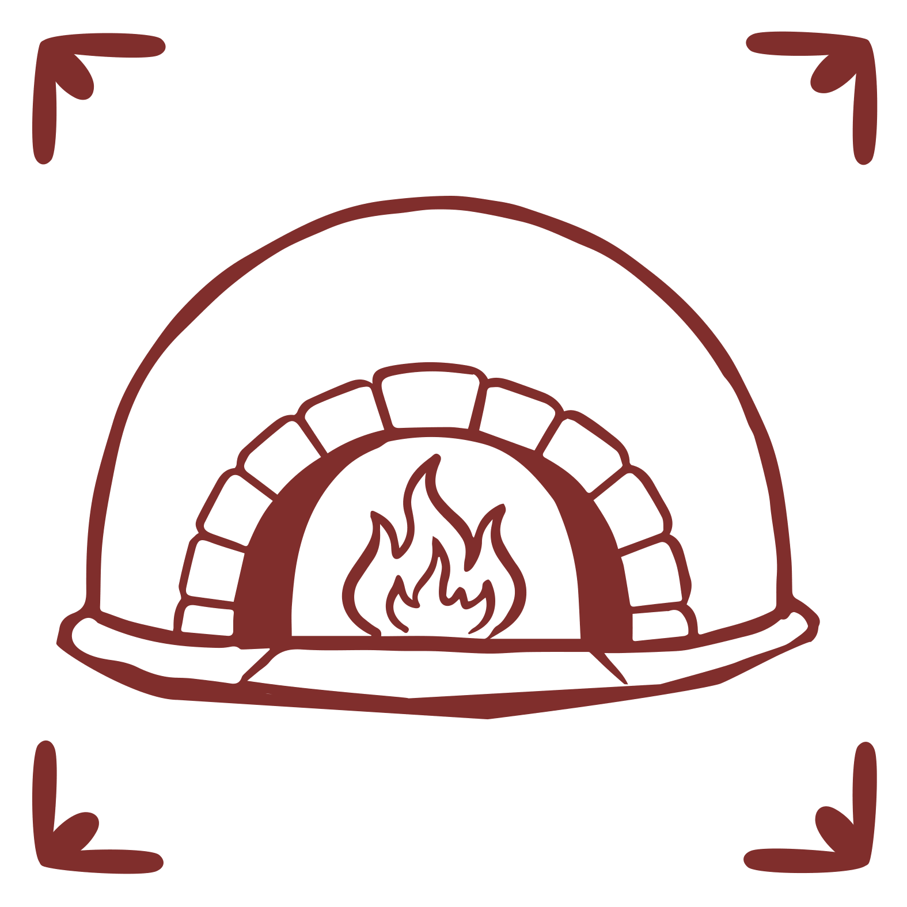
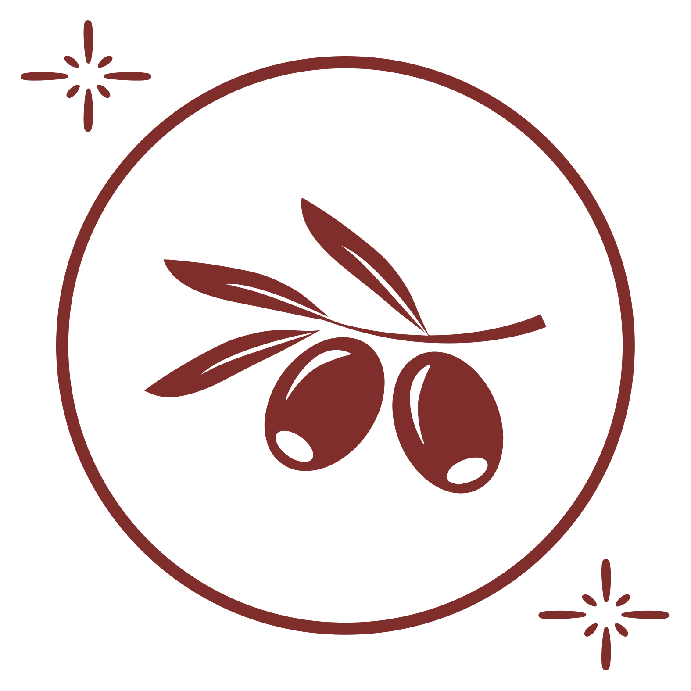
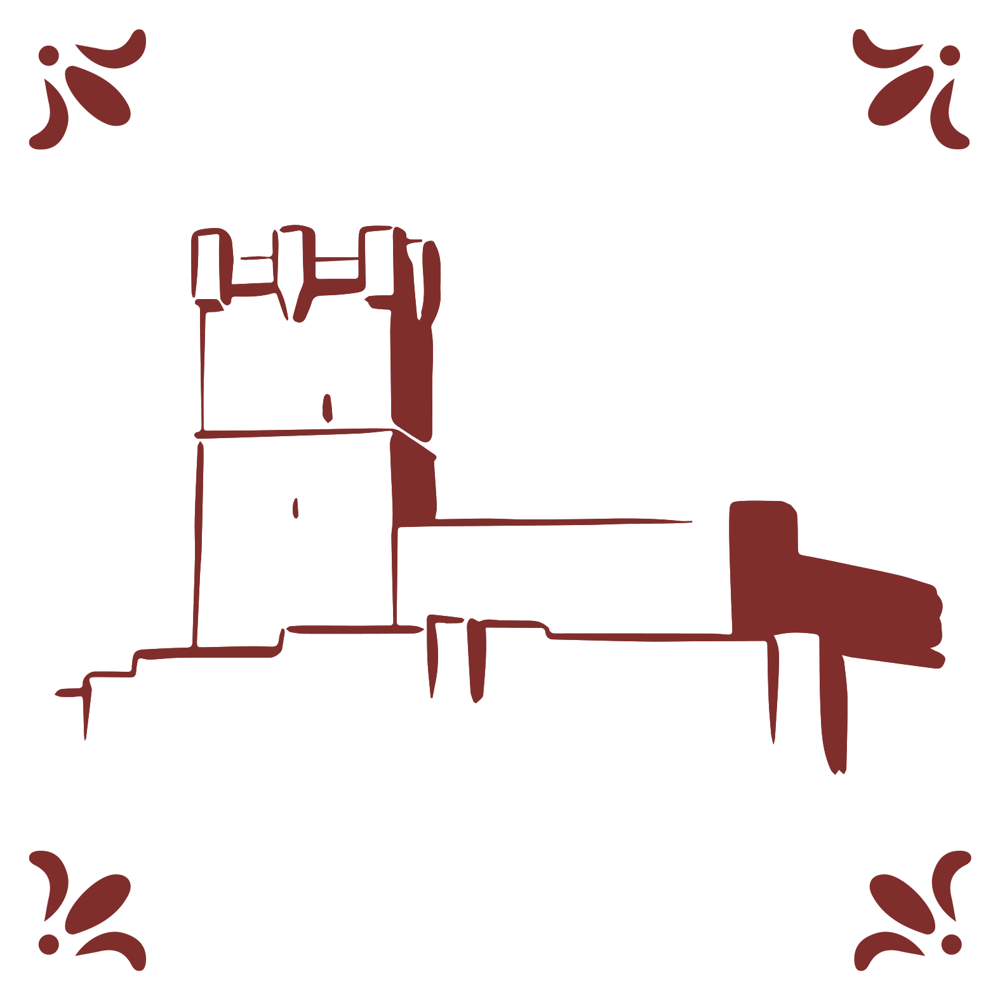
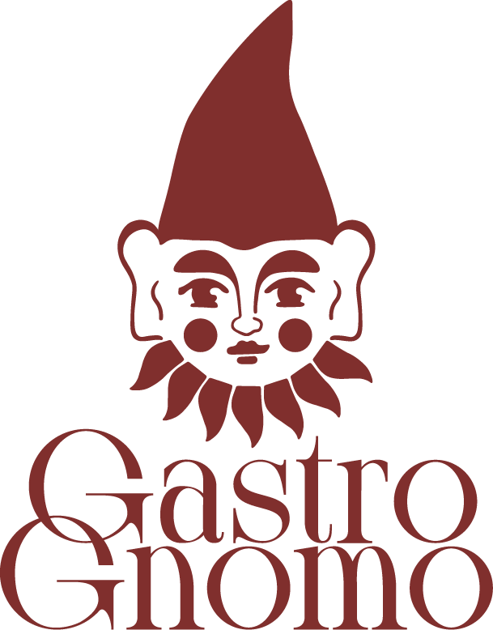

MARINARA
7 €Tomate, albahaca, ajo morado de Las Pedroñeras, orégano y aceite "Tesoro de Villena".
Pizzas artesanales hechas con cariño, ingredientes seleccionados y una buena dosis de tradición italiana.

Elaborada siguiendo el espíritu y la tradición de la pizza napolitana.

Apostamos por productos de nuestra tierra y por el sabor de lo cercano.

Una pizza con raíces en Villena y mucho cariño por nuestra tierra.

En Gastrognomo Pizzeria nos gusta pensar que cada pizza tiene su propia historia y que, a veces, la suerte también se puede cocinar.
Nacimos en Villena, una tierra con identidad propia, tradición y pequeños tesoros que forman parte de nuestra cultura. Entre ellos está el famoso orejón, un producto que nos recuerda que las cosas sencillas, cuando se hacen bien, pueden convertirse en algo extraordinario.
Y de ahí nace nuestro gnomo. Un pequeño personaje que representa esa parte mágica de Gastrognomo y que conecta nuestra tierra con una de las tradiciones más conocidas de Nápoles: el cuerno de la suerte napolitano.
Así mezclamos dos mundos que nos encantan: la esencia de Villena y el espíritu de la pizza napolitana. Una mezcla hecha con cariño, buen producto y muchas ganas de que cada visita tenga un poquito de suerte.
Te esperamos en Gastrognomo Pizzeria.
Jueves a Domingo
19:00 - 23:30